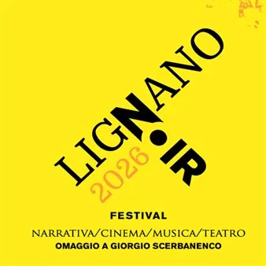

da gio 3 set a sab 5 set
Lignano Noir 2026
Un’unica manifestazione con 2 appuntamenti raccolti e ordinati nel programma completo.
 Indicazioni
Indicazioni
- Costi e prenotazioni
- Costo non indicato · Prenotazione non indicata
- Programma
- Programma raccolto. Gli appuntamenti delle diverse schede sono riuniti in questa pagina.
- In caso di maltempo
- Nessuna indicazione specifica pubblicata.
- Note
- Le schede dei singoli appuntamenti sono state unite nella manifestazione principale.
L’EVENTO
Descrizione completa
Concerto La banda del Jukebox. Gli anni ’60 di Scerbanenco
con il gruppo Black Gold cantanti Anna Danieli e Luca Bettella
In dedica al maestro del giallo Giorgio Scerbanenco Diretta RADIO RAI FVG 1
Antonia Pillosio e Giacomo Plozner in compagnia di Cecilia Scerbanenco e Oscar D’Agostino evento aperto al pubblico
Raccontare oggi la cronaca nera di ieri in 65 episodi del territorio con Paolo Cagnan, vicedirettore di Nord Est
Cerimonia di Premiazione dei vincitori della 12ª edizione del
Il concorso letterario omaggia il grande scrittore Giorgio Scerbanenco, legato storicamente alla località friulana. Il premio è dedicato a racconti gialli e/o noir inediti in lingua italiana.
Lignano Sabbiadoro è la città che Scerbanenco scelse, dopo averla scoperta da turista, come luogo di residenza per diversi anni, instaurando un forte legame che permane tuttora con la presenza della figlia Cecilia, curatrice dell’opera del padre e dell’
(libri, oggetti, documenti, lettere, manoscritti) custodito nella Biblioteca Comunale.
Cerimonia di Premiazione dei vincitori della 12ª edizione del Premio Scerbanenco@Lignano . Il concorso letterario omaggia il grande scrittore Giorgio Scerbanenco, legato storicamente alla località friulana. Il premio è dedicato a racconti gialli e/o noir inediti in lingua italiana. Lignano Sabbiadoro è la città che Scerbanenco scelse, dopo averla scoperta da turista, come luogo di residenza per diversi anni, instaurando un forte legame che permane tuttora con la presenza della figlia Cecilia, curatrice dell’opera del padre e dell’ Archivio Giorgio Scerbanenco (libri, oggetti, documenti, lettere, manoscritti) custodito nella Biblioteca Comunale. Legge i racconti Massimo Somaglino. Ingresso libero.
IL PROGRAMMA
Programma e orari
Le singole date appartengono alla stessa manifestazione. Ogni sede verificata dispone delle proprie indicazioni.
Da Giovedì 3 settembre a Sabato 5 settembre · Lignano Noir 2026. Festival omaggio a Giorgio Scerbanenco.
Lignano Sabbiadoro · Piazza Ursella e Biblioteca Comunale in via Treviso, 2
- ore 18.30
Sabato 5 settembre · Premio Scerbanenco@Lignano - Cerimonia di Premiazione dei vincitori
Lignano Sabbiadoro · Biblioteca Comunale Via Treviso, 2
- Cerimonia di Premiazione dei vincitori della 12^ edizione del Premio Scerbanenco. Il concorso letterario omaggia il grande scrittore Giorgio Scerbanenco, legato storicamente alla località friulana. Il premio è dedicato a racconti gialli e/o noir inediti in lingua italiana.…
INFORMAZIONI UTILI
Prima di partire
- Controllare la fonte prima di partire.
ORGANIZZAZIONE